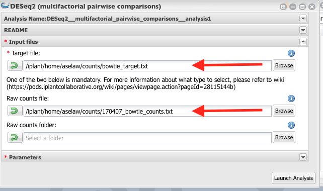
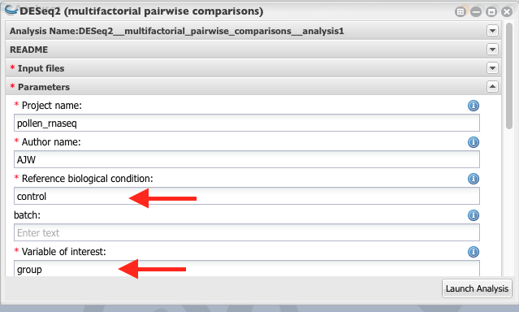
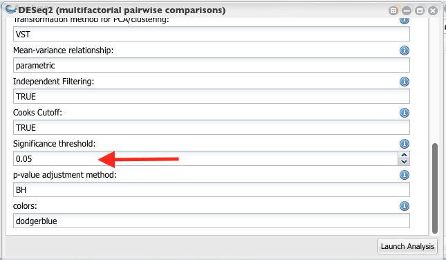

Differential gene expression analysis¶
Link for Bowtie mapped counts http://de.cyverse.org/dl/d/E9B4C299-D6CB-4656-A4F6-FF67240AEA49/170407_bowtie_counts.txt
Target file for bowtie mapped reads: http://de.cyverse.org/dl/d/BECB62C3-A369-4084-9BC9-2BFD9E6E9600/bowtie_target.txt
DESeq tutorial:¶
Steps to perform DEseq analysis¶
From Apps select “DEseq (Multifactorial Comparison)

Name your analysis and select a folder where your results need to be saved.

Select the correct target file and the count file.

4. Give a name to the project. Reference biological condition should be “control” samples. Variable of interest is “group” (Column header of the third column of the target file).

Set the significant threshold to 0.05 and launch the analysis.

DE gene list¶
I have used the following R code to merge the DE genes list and the functions.
library(reshape2)
library(readr)
# Used the terminal command to grep the fasta headers and wrote it to a file called "ITAG3_10_cDN_names.txt"
#imported this file to Rstudio
# Removed the ">" sign
ITAG3_10_formated_names <- as.data.frame(sapply(ITAG3_10_cDN_names, gsub, pattern = ">", replacement = "" ))
#Seperate gene ids and description using space as delimiter
ITAG3_10_formated_names <- data.frame(colsplit(ITAG3_10_formated_names$X1, " ", c("Id", "Description")))
#imported up regulated genes to Rstudio and merge with the above file using gene ids.
heatvscontrol_up_func <- merge(heatvscontrol_up, ITAG3_10_formated_names,
by.x = "Id",
by.y = "Id")
#write output
write.table(x = heatvscontrol_up_func, file = "heatvscontrol_up_func.txt", quote = FALSE, sep = "\t", row.names = FALSE)
#imported down regulated genes to Rstudio and merge with the above file using gene ids
heatvscontrol_down_func <- merge(heatvscontrol_down, ITAG3_10_formated_names,
by.x = "Id",
by.y = "Id")
#write output
write.table(x = heatvscontrol_down_func, file = "heatvscontrol_down_func.txt", quote = FALSE, sep = "\t", row.names = FALSE)
Up-regulated gene list: http://de.cyverse.org/dl/d/E641698E-8688-4C20-B829-0B12BABC8ABB/heatvscontrol_up_func.txt
Down-regulated gene list: http://de.cyverse.org/dl/d/3C45B913-612F-4B97-8F44-8021470AE527/heatvscontrol_down_func.txt